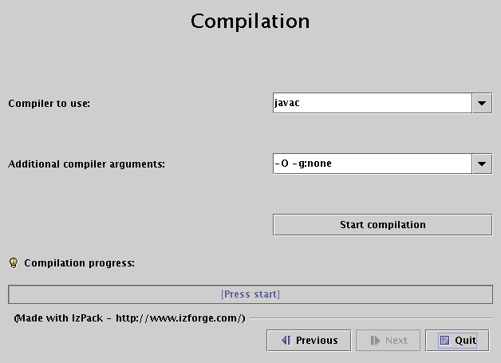

| Next: Advanced Features Up: izpack-doc Previous: Getting started Contents |
In order to write your XML installation files, you just need a plain text editor. Of course it's always easier to work with color coded text, so you might rather want to work with a text editor having such a feature. Here is a list of free editors that work well :
If you are a developer and tend to write your own patches, extension or features to IzPack sources, or, if you wish to debug your compilation, installation and uninstallation, we recommend two IDE:
For the first one, JetBrains has granted us an Open Source License. All project members can ask the Licence Key to one of the project manager.
The second one is a well know open source (Just like us :-)) IDE. We provide a tutorial on how to develop/debug IzPack using Eclipse in the chapter Getting Started -> How to develop and debug IpPack using Eclipse
Though you might not know much about XML, you have certainly heard about it. If you know XML you can skip this subsection as we will briefly present how to use XML.
XML is a markup language, really close to HTML. If you've ever worked with HTML the transition will be fast. However there are a few little things to know. The markups used in XML have the following form : <markup>. Each markup has to be closed somewhere with its ending tag : </markup>. Each tag can contain text and other markups. If a markup does not contain anything, it is just reported once : <markup/>. A markup can contain attributes like : <markup attr1="123" attr2="hello !"/>. Here is a sample of a valid XML structure :
<chapter title="Chapter 1">
<section name="Introduction">
<paragraph>
This is the text of the paragraph number 1. It is available for the very low
price of <price currency="dollar">1 000 000</price>.
</paragraph>
</section>
<section name="xxx">
xxx
</section>
</chapter>
You should be aware of the following common mistakes :
Also, an XML file must start with the following header :
<?xml version="1.0" encoding="iso-8859-1 standalone="yes" ?>. The only thing you should modify is the encoding (put here the one your text editor saves your files to). The
standalone attribute is not very important for us.
This (brief !) introduction to XML was just meant to enable you to write your installation specification. For a better introduction there are plenty of books and articles/tutorials dealing with
XML on the Internet, in book stores, in magazines and so on.
During the installation process IzPack can substitute variables in various places with real values. Obvious targets for variable substitution are resource files and launch scripts, however you
will notice many more places where it is more powerful to use variables rather then hard coded values. Wherever variables can be used it will be explained in the documentation.
There are three types of variables:
You define your own variables in the installation XML file with the <variable> tag. How to do this is explained in detail later in this chapter.
Please note that when using variables they must always appear with a '$' sign as the first character, even though they are not defined this way.
The following variables are built-in :
Environment variables can be accessed via the syntax ${ENV[variable]}. The curly braces are mandatory. Note that variable names are case-sensitive and usually in UPPER CASE.
Example: To get the value of the OS environment variable "CATALINA_HOME", use ${ENV[CATALINA_HOME]}.
Parse types apply only when replacing variables in text files. At places where it might be necessary to specify a parse type, the documentation will mention this. Depending on the parse type, IzPack will handle special cases -such as escaping control characters- correctly. The following parse types are available:
When writing your installer XML files, it's a good idea to have a look at the iZPACK installation DTD.
The root element of an installation is <installation>. It takes one required attribute : version. The attribute defines the version of the XML file layout and is used by
the compiler to identify if it is compatible with the XML file. This should be set to for the moment.
This element is used to specify some general information for the installer. It contains the following elements :
Here is an example of a typical <info> section :
<info>
<appname>Super extractor</appname>
<appversion>2.1 beta 6</appversion>
<appsubpath>myCompany/SExtractor</appsubpath>
<url>http://www.superextractor.com/</url>
<authors>
<author name="John John Doo" email="jjd@jjd-mail.com"/>
<author name="El Goyo" email="goyoman@mymail.org"/>
</authors>
<javaversion>1.2</javaversion>
</info>
This element allows you to define variables for the variables substitution system. Some variables are built-in, such as $INSTALL_PATH (which is the installation path chosen by the user). When you define a set of variables, you just have to place as many <variable> tags in the file as needed. If you define a variable named VERSION you need to type $VERSION in the files to parse. The variable substitutor will then replace it with the correct value. One <variable> tag take the following attributes :
Here's a sample <variables> section :
<variables> <variable name="app-version" value="1.4"/> <variable name="released-on" value="08/03/2002"/> </variables>
Here's a precise sample on how to use desktopshortcutcheckboxenabled and InstallerFrame.logfilePath variables:
<variables> <variable name="InstallerFrame.logfilePath" value="$INSTALL_PATH/My-install.log"/> <!-- This means that the log name will be My-install and that it will be stored at the root of the installation. --> <!-- Any path is fine. If value is set to "Default" then "$INSTALL_PATH/uninstall/install.log" is used. --> <!-- And if variable isn't defined then no log is written. --> <variable name="desktopshortcutcheckboxenabled" value="true"/> <!-- This automatically checks the "Create Desktop Shortcuts" button. Default value is "False". --> </variables>
This element allows you to set the behavior of your installer GUI. This information will not have any effect on the command-line installers that will be available in future versions of iZPACK . The arguments to specify are :
Here's a sample :
<guiprefs resizable="no" width="800" height="600"/>
Starting from IzPack 3.6, the look and feel can be specified in this section on a per-OS basis. For instance you can use the native look and feels on Win32 and OS X but use a third-party one on Unix-like platforms. To do that, you have to add some children to the guiprefs tag:
The available look and feels are:
If you don't specify a look and feel for a particular operating system, then the default native one will be used: Windows on Windows, Aqua on Mac OS X and Metal on the Unix-like variants.
The Liquid Look and Feel supports the following parameters:
The JGoodies Looks look and feel can be specified by using the variant parameters. The values can be one of:
Here is a small sample:
<guiprefs height="600" resizable="yes" width="800">
<laf name="metouia">
<os family="unix" />
</laf>
<laf name="looks">
<os family="windows" />
<param name="variant" value="extwin" />
</laf>
</guiprefs>
Starting from IzPack 3.7, some characteristics can be customized with the <modifier> tag. There is a separate description in the Advanced Features chapter paragraph Modifying the GUI.
This element is used to specify the language packs (langpacks) that you want to use for your installer. You must set one <langpack> markup per language. This markup takes the
iso3 parameter which specifies the iso3 language code.
Here's a sample :
<locale> <langpack iso3="eng"/> <langpack iso3="fra"/> <langpack iso3="spa"/> </locale>
The supported ISO3 codes are :
| ISO3 code | Language |
|---|---|
| cat | Catalunyan |
| chn | Chinese |
| cze | Czech |
| dan | Danish |
| deu | German |
| eng | English |
| fin | Finnish |
| fra | French |
| hun | Hungarian |
| ita | Italian |
| jpn | Japanese |
| mys | Malaysian |
| ned | Nederlands |
| nor | Norwegian |
| pol | Polnish |
| por | Portuguese (Brazilian) |
| rom | Romanian |
| rus | Russian |
| scg | Serbian |
| spa | Spanish |
| svk | Slovakian |
| swe | Swedish |
| ukr | Ukrainian |
Several panels, such as the license panel and the shortcut panel, require additional data to perform their task. This data is supplied in the form of resources. This section describes how to
specify them. Take a look at each panel description to see if it might need any resources. Currently, no checks are made to ensure resources needed by any panel have been included. The
<resources> element is not required, and no <res> elements are required within.
You have to set one <res> markup for each resource. Here are the attributes to specify :
Here's a sample :
<resources> <res id="InfoPanel.info" src="doc/readme.txt" parse="yes"/> <res id="LicencePanel.licence" src="legal/License.txt"/> </resources>
Here you tell the compiler which panels you want to use. They will appear in the installer in the order in which they are listed in your XML installation file. Take a look at the different panels
in order to find the ones you need. The <panel> markup takes a single attribute classname which is the classname of the panel.
Here's a sample :
<panels> <panel classname="HelloPanel"/> <panel classname="LicencePanel"/> <panel classname="TargetPanel"/> <panel classname="InstallPanel"/> <panel classname="FinishPanel"/> </panels>
This is a crucial section as it is used to specify the files that need to be installed. The <packs> section consists of several <pack> tags.
The <pack> takes the following attributes :
In order to provide internationalization for the PacksPanel, so that your users can be presented with a different name and description for each language you support, you have to create a file named packsLang.xml_xyz where xyz is the ISO3 code of the language in lowercase. Please be aware that case is significant. This file has to be inserted in the resources section of install.xml with the id and src attributes set at the name of the file. The format of these files is identical with the distribution langpack files located at $IZPACK_HOME/bin/langpacks/installer. For the name of the panel you just use the pack id as the txt id. For the description you use the pack id suffixed with '.description'.
The following sections describe the tags available for a <pack> section.
The contents of the <description> tag describe the pack contents. This description is displayed if the user highlights the pack during installation.
This can be used to make this pack selectable only to be installed only if some other is selected to be installed. The pack can depend on more than one by specifying more than one
<depends> elements.
Circular depedencies are not supported and the compiler reports an error if one occurs.
This tag takes the following attribute:
It is possible to restrict a panel to a certain list of operating systems. This tag takes the following attributes:
This feature can update an already installed package, therefore removing superfluous files after installation. Here's how this feature author (Tino Schwarze) described it on the IzPack development mailing-list:
Each pack can now specify an <updatecheck> tag. It supports a subset of ant fileset syntax, e.g.:
<updatecheck> <include name="lib/**" /> <exclude name="config/local/** /> </updatecheck>
If the paths are relative, they will be matched relative to $INSTALL_PATH. Update checks are only enabled if at least one <include> is specified. See com.izforge.izpack.installer.Unpacker for details.
The <file> tag specifies a file (a directory is a file too) to include into the pack. It takes the following attributes:
This tag can also be specified in order to pass additional data related to a file tag for customizing.
Specifies a single file to include. The difference to <file> is that this tag allows the file to be renamed, therefore it has a target attribute instead of targetdir.
A <additionaldata> (2.3.8) tag can also be specified for customizing.
The <fileset> tag allows files to be specified using the powerful Jakarta Ant set syntax. It takes the following parameters:
You specify the files with <include> and <exclude> tags that take the name parameter to specify the Ant-like pattern :
Here are some examples of Ant patterns :
There area set of definitions that are excluded by default file-sets, just as in Ant. IzPack defaults to the Ant list of default excludes. There is currently no equivalent to the <defaultexcludes> task. Default excludes are:
**/*\~{}
**/\#*\#
**/.\#*
**/%*%
**/.\_*
**/CVS
**/CVS/**
**/.cvsignore
**/SCCS
**/SCCS/**
**/vssver.scc
**/.svn
**/.svn/**
**/.DS\_Store
A <additionaldata> (2.3.8) tag can also be specified for customizing.
Files specified by <parsable> are parsed after installation and may have variables substituted.
The <executable> tag is a very useful thing if you need to execute something during the installation process. It can also be used to set the executable flag on Unix-like systems. Here are the attributes :
A <args> tag can also be specified in order to pass arguments to the executable:
The <os> tag can be used inside the <file>, <fileset>, <singlefile>, <parsable>, <executable> tags to restrict it's effect to a specific operating system family, architecture or version:
Here's an example installation file :
<packs>
<!-- The core files -->
<pack name="Core" required="yes">
<description>The IzPack core files.</description>
<file targetdir="$INSTALL_PATH" src="bin"/>
<file targetdir="$INSTALL_PATH" src="lib"/>
<file targetdir="$INSTALL_PATH" src="legal"/>
<file targetdir="$INSTALL_PATH" src="Readme.txt"/>
<file targetdir="$INSTALL_PATH" src="Versions.txt"/>
<file targetdir="$INSTALL_PATH" src="Thanks.txt"/>
<parsable targetfile="$INSTALL_PATH/bin/izpack-fe"/>
<parsable targetfile="$INSTALL_PATH/bin/izpack-fe.bat"/>
<parsable targetfile="$INSTALL_PATH/bin/compile"/>
<parsable targetfile="$INSTALL_PATH/bin/compile.bat"/>
<executable targetfile="$INSTALL_PATH/bin/compile" stage="never"/>
<executable targetfile="$INSTALL_PATH/bin/izpack-fe" stage="never"/>
</pack>
<!-- The documentation (1 directory) -->
<pack name="Documentation" required="no">
<description>The IzPack documentation (HTML and PDF).</description>
<file targetdir="$INSTALL_PATH" src="doc"/>
</pack>
</packs>
Use this if you want to use a feature that requires a native library. The native libraries are placed under bin/native/... There are 2 kinds of native libraries : the iZPACK libraries and the third-party ones. The IzPack libraries are located at bin/native/izpack, you can place your own libraries at bin/native/3rdparty. It is possible to place a native library also into the uninstaller. It is useable from CustomActions (7). If one or more are referenced for it, the needed support classes are automatically placed into the uninstaller. To place it only on operating systems for which they are build, it is possible to define an OS restriction. This restriction will only be performed for the uninstaller. The markup takes the following attributes :
The <os> tag can be used to restrict the inclusion into the uninstaller to a specific operating system family, architecture or version. The inclusion into the installer will be always done. For more information see 2.3.8.
Here's a sample :
<native type="izpack" name="ShellLink.dll"/>
If you adapt iZPACK for your own needs, you might need to merge the content of another jar file into the jar installer. For instance, this could be a library that you need to merge. The <jar> markup allows you to merge the raw content of another jar file into the installer and the uninstaller. It is necessary that the paths in the jars are unique because only the contained files of the jar are added to the installer jar, not the jar file self. The attributes are:
A sample :
<jar src="../nicelibrary.jar"/>
In this section i will introduce the various panels available in IzPack. The usage for most is pretty simple and described right here. The more elaborate ones are explained in more detail in the
Advanced Features chapter or in their own chapter. The panels are listed by their class name. This is the name that must be used with the classname attribute. Please be aware that the classname is Case-Sensitive, meaning that if the case from the install.xml and the founded class file differs the installation will break. In this last case, the installer will Throw an IllegalArgumentException in the compiler if the declared class name in the xml file differs in case from the founded class file.
This panel welcomes the user by displaying the project name, the version, the URL as well as the authors.
This panel welcomes the user also by displaying the project name, the version, the URL as well as the authors.
Additonal on windows the registry will be scanned for an entry which determines that the product is already installed. If so, a dialog will be shown which ask whether to install a second version of the product or not. If you use this panel do not forget to add the registry feature into your installation.
This is a kind of 'README' panel. It presents text of any length. The text is specified by the (HTML)InfoPanel.info resource. Starting from IzPack 3.7.0, variables substitution is
allowed.
To add an image to the HTMLInfoPanel you simply need to add a ressource to your install.xml with an ID decided by you, then you can call this image by refering it by this same ID.
e.g.: In install.xml: <resources> <res src="logo.jpg" id="GHGHGH"/> ..... And in file.html: <img src="GHGHGH" />
Note: There is a mistake in the name - it should be LicensePanel. In France the word is Licence ... and one of my diploma is a 'Licence' so ...: -)
Adding images to HTMLLicencePanel works exactly the same way as with HTMLInfoPanel.
These panels can prompt the user to acknowledge a license agreement. They block unless the user selects the 'agree' option. To specify the license agreement text you have to use the
(HTML)LicencePanel.licence resource.
Allows the user to select the packs he wants to install.
This is the same as above, but for each panel a different picture is shown to the user. The pictures are specified with the resources ImgPacksPanel.img.x where x stands for the pack
number, the numbers start from 0. Of course it's up to you to specify as many images as needed and with correct numbers. For instance if you have 2 packs core and documentation (in
this order), then the resource for core will be ImgPacksPanel.img.0 and the resource for doc will be ImgPacksPanel.img.1. The supported image formats depend on
what you JVM supports, but starting from J2SE 1.3, GIF, JPEG and PNG are supported.
This panel allows the user to select the installation path. It can be customized with the following resources (they are text files containing the path) :
You should always have this one as it launches the installation process !
A panel showing text parsed by the variable substitutor. The text can be specified through the XInfoPanel.info resource. This panel can be useful when you have to show information after
the installation process is completed (for instance if the text contains the target path).
A ending panel, able to write automated installer information. For details see the chapter on 'Advanced Features'.
Same as FinishPanel, but without the automated installer features. It is aimed at making the life easier for end-users who will never encounter the automated installer extra
feature.
This panel is used to create desktop shortcuts. For details on using the ShortcutPanel see the chapter 'Desktop Shortcuts'.
This panel allows you to prompt the user for data. What the user is prompted for is specified using an XML file which is included as a resource to the installer. See chapter 6 on page ![[*]](crossref.png) for a detailed explanation.
for a detailed explanation.
This panel allows you to compile just installed Java sourcecode. The details for the compilation are specified using the resource CompilePanel.Spec.xml. The XML file has the following format:
<compilation>
<global>
<compiler>
<choice value="$JAVA_HOME/bin/javac" />
<choice value="jikes" />
</compiler>
<arguments>
<choice value="-O -g:none" />
<choice value="-O" />
<choice value="-g" />
<choice value="" />
</arguments>
</global>
<jobs>
<classpath add="$INSTALL_PATH/src/classes/" />
<job name="optional name">
<directory name="$INSTALL_PATH/src/classes/xyz" />
</job>
<job name="another job">
<packdepency name="some package name" />
<classpath sub="$INSTALL_PATH/" />
<directory name="$INSTALL_PATH/src/classes/abc" />
<file name="$INSTALL_PATH/some/file.java" />
</job>
</jobs>
</compilation>
In theory, jobs can be nested but this has not been tested at all. A change to the classpath within a job only affects this job and nested jobs. The classpath should be specified before any files or directories.
The user can change the compiler to use and choose from some default compilation options before compilation is started.

This panel allows you to execute arbitrary files after installation. The details for the compilation are specified using the resource ProcessPanel.Spec.xml.
The XML file has the following format:
<processing>
<job name="do xyz">
<os family="windows" />
<executefile name="$INSTALL_PATH/scripts/xyz.bat">
<arg>doit</arg><arg>$variable</arg>
</executefile>
</job>
<job name="do xyz">
<os family="unix" />
<executefile name="$INSTALL_PATH/scripts/xyz.sh">
<arg>doit</arg><arg>$variable</arg>
</executefile>
</job>
</processing>
Each job may have an <os> attribute - see 2.3.8 for details.
It is also possible to execute Java classes from this panel. Here's what this feature author (Alex Bradley) says:
i've been able to work around my requirements by extending the ProcessPanelWorker functionality to run user-specified classes. i've extended the DTD of the ProcessPanel.Spec.xml to include a new element:
<executeclass name="classname"> <args..../> </executeclass>
i've also added a new sub-class of Processable called executeclass. This will run a user-specified class in the context of the installer JVM with a single method :
run( AbstractUIProcessHandler handler, String[] args]);
It can do everything i need and more. In particular, it allows me to write a process extension and still be able to provide feedback to the user through the feedback panel, and to add new functionality to the installer, after its been built.
To use the executeclass facility, you will need to create a jar file with your class and then add it to the installer with the The Jar Merging Element.
This can be be used to run the job only if the pack is enabled.
For example, the batch file will if either the Sources
or Executables packs are selected at install time.
<processing> <job name="List files"> <executeForPack name="Sources"/> <executeForPack name="Executables"/> <os family="windows" /> <executefile name="$INSTALL_PATH\batch\ListFiles.bat" /> </job> </processing>
New with version 3.7 is the possibility to tee output that is written to the ProcessPanel's textarea into an optional logfile. Using this feature is pretty much straightforward, you only have to add a line in ProcessPanel.Spec.xml that will tell IzPack the location, where the logfile should be stored.
Variable substitution is performed, so you can use $INSTALL_PATH as example.
The name of the logfile is not (yet) configurable but should fit in most cases. It will be named
Install_V<$APP_VER>_<YYYY>-<MM>-<DD>_<hh>-<mm>-<ss>_<RandomId>.log
Here's an example:
<processing>
<logfiledir>$INSTALL_PATH</logfiledir>
<job name="do xyz">
<os family="windows" />
<executefile name="$INSTALL_PATH/scripts/xyz.bat">
<arg>doit</arg><arg>$variable</arg>
</executefile>
</processing>
This will generate a logfile named e.g. Install_V1.3_2004-11-08_19-22-20_43423.log located in $INSTALL_PATH.
ProcessPanelWorker will write all output that is directed to stdout and stderr to this file if ProcessPanel.Spec.xml contains the logfiledir entry.
Please note that this one file is used for storing the complete output of all jobs and not a file for each job that is run.
This panel allows the user to select a JDK path. The variable JAVA_HOME does not point to a JDK, else to a JRE also the environment variable points to a JDK. This is not a bug, this is the behavior of the VM. But some products needs a JDK, for that this panel can be used. There is not only a selection of the path else a validation. The validation will be done with the file JDKPath/lib/tools.jar. If JAVA_HOME points to the VM which is placed in the JDK, the directory will be used as default (JAVA_HOME/..). If there is the variable
JDKPathPanel.skipIfValid
defined with the value "yes", the panel will be skiped if the path is valid. Additional it is possible to make a version control. If one or both variables
JDKPathPanel.minVersion JDKPathPanel.maxVersion
are defined, only a JDK will be accepted which has a version in the range of it. The detection is a little bit pragmatically, therefor it is possible, that the detection can fail at some VMs. The values in the install.xml should be like
<variables> <variable name="JDKPathPanel.minVersion" value="1.4.1" /> <variable name="JDKPathPanel.maxVersion" value="1.4.99" /> <variable name="JDKPathPanel.skipIfValid" value="yes" /> </variables>
If all is valid, the panels isValidated method sets the variable
JDKPath
to the chosen path. Be aware, this variable exist not until the JDKPanel was quitted once. At a secound activation, the default will be the last selection.
This panel will look at the local printers installed and propose a list box with all of them. Once chosen, the variable $SELECTED_PRINTER is set to the user choice.
DataCheckPanel is not for inclusion in an actuall install, but is a debugging resource for developers writing custom panels or code to be included in IzPack.
It creates a list of all the variables in InstallData, their values and a list of all packs, indicating which are selected.
This list is printed to the console and appears in a scrollable text area on the panel.
Put the panel in wherever you want to see any variables in InstallData or a listing of the packs with a line like this in the <panels> section of install.xml:
<panel classname="DataCheckPanel" />
It will automatically give you a full list of all the variables and packs whenever the panel is made active.
This panel gives a summary of all shown panels. The best place for it is just infront of the InstallPanel. Normaly it contains a warning that this is the last panel before installation. The panel contains a scrollable HTML text area to display the summary. The informations are collected from each panel by calling the methods getSummaryCaption and getSummaryBody. getSummaryCaption is implemented in IzPanel with a panel name default text. getSummaryBody has to be implemented in all panels which should be presented in the summary. If the secound method is not implemented, no summary of this panel will be shown.
Additional it is possible to log the contents of the summary panel into a HTML file.
This Panel groups the pack together. A panel which displays the available installGroups found on the packs to allow the user to select a subset of the packs based on the pack installGroups attribute. This panel will be skipped if there are no pack elements with an installGroups attribute. For example
<installation version="1.0">
(...)
<panels>
(...)
<panel classname="InstallationGroupPanel"/>
<panel classname="PacksPanel"/>
(...)
</panels>
<packs>
<pack name="Base"
installGroups="Group1" required="yes">
(...)
</pack>
<pack name="Docs"
installGroups="Group1,Group2" required="no">
(...)
</pack>
<pack name="Sources"
installGroups="Group3,Group2" required="no">
(...)
</pack>
</packs>
</installation>
In above example when InstallationGroupPanel is displayed, it contains three radios named Group1, Group2 and Group3.
Depending on what user selects respective Packs will be displayed in PacksPanel. InstallationGroupPanel will look
for description corresponding to key InstallationGroupPanel.description.Group1,
InstallationGroupPanel.description.Group2 etc in installation langpacks and displays this description for each of
the Group_i.
| Next: Advanced Features Up: izpack-doc Previous: Getting started Contents |